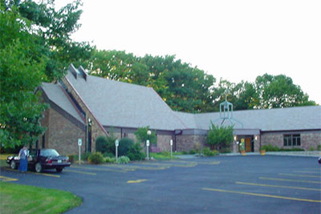

|
| home | hotels | registry | ceremony | reception | sight seeing | about us | contact us |
The Ceremony
We will be married at the Zion Lutheran Church (webpage) in Geneva at 2:30 PM on Sunday, June 20th. We estimate the ceremony will last for just under an hour with a recieving line immediatly following at the church. Zion Lutheran is located down the street from Belhurst Castle (driving directions) at 18 Snell Road, Geneva From the Thruway
- Take the NYS Thruway to Exit 42
- Take Rte 14 South for ~8 miles
- Turn Right onto Snell Road (Belhurst Castle will be on your left)
- The church is four houses up the road on your right
From Ithaca
- Take Rte. 96 North to Rte 96A North
- Turn Left onto Rte 5&20
- Take the exit for Rte 14 South
- Turn Right onto Snell Road (Belhurst Castle will be on your left)
- The church is four houses up the road on your right